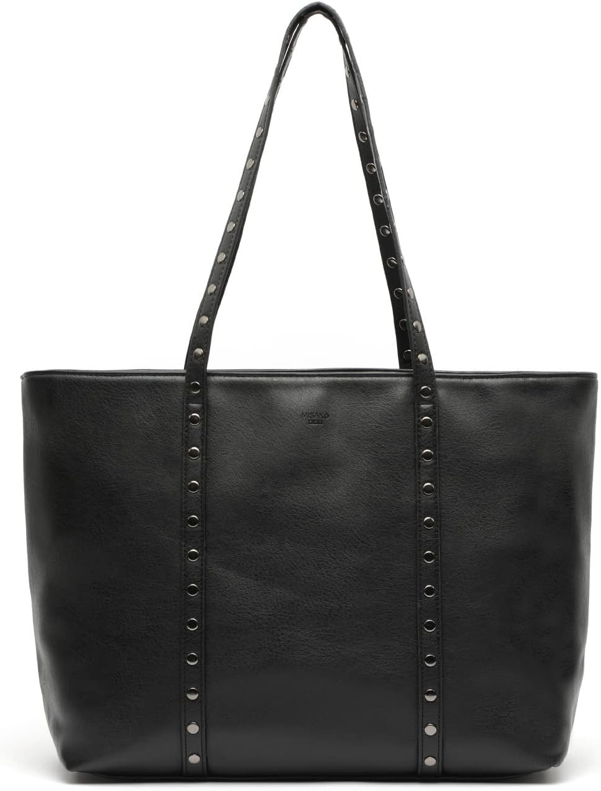

MISAKO Watty bolso shopper con detalles metálicos | Cierre de cremallera: el bolso del día 338
Fin de semana: otras reglas, otros ritmos. El bolso de hoy es el MISAKO Watty bolso shopper con detalles metálicos | Cierre de cremallera. No es un capricho de escaparate: es el que acompaña el bolso que no pide permiso, con 4,2★ de nota media y 102 valoraciones que respaldan la decisión.

Un bolso no cambia tu día. Cambia la manera de entrar en él: con lo que necesitas, sin lo que sobra y con la certeza de que otras 102 personas ya hicieron la misma elección antes que tú. Lo que más repiten sus compradoras: capacidad.
El repositorio de bolsos aún está creciendo hacia los 365: el día 338 comparte bolso con el día 34, pero cada paso por el calendario le da un enfoque nuevo. Cuando el repositorio se complete, cada día tendrá su propio bolso definitivo.